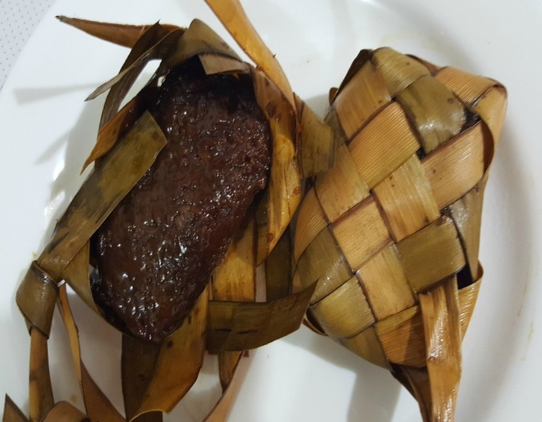

Patupat
Patupat Iloko: Patupat is a delicacy made from glutinous rice cooked in sugarcane juice. This popular Ilocano snack is usually prepared during summer when sugarcane is harvested.Every January, during the celebration of the founding anniversary of Pozorrubio, Patupat Festival happens. Patupat is a Filipino food that is made from sticky rice, wrapped in banana or coconut leaves in a knot, then cooked in boiling water sugarcane-juice.